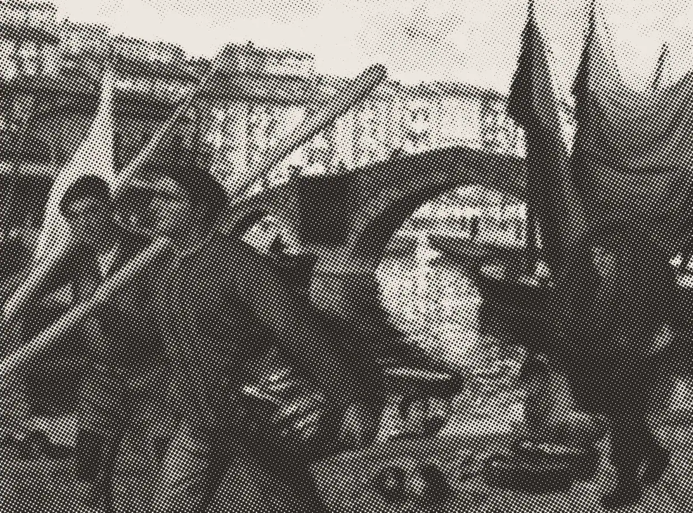
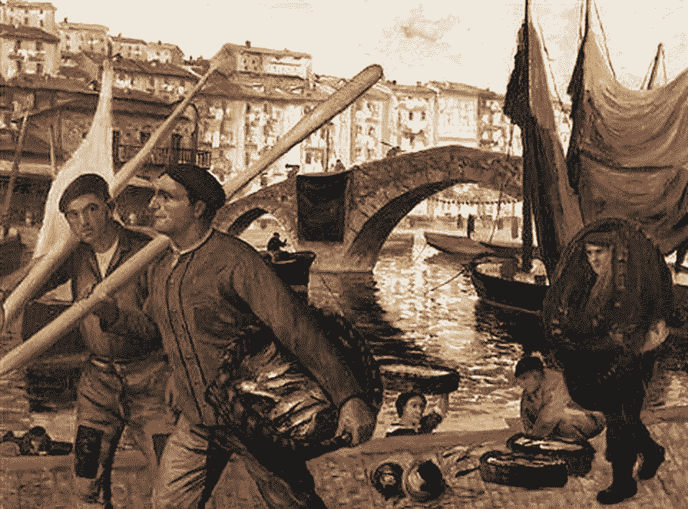
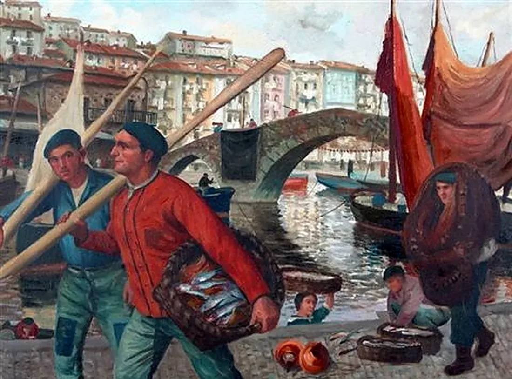

We turn paintings into patterns of light.
Dither is a small studio and an open tool for error diffusion, halftone and line engraving — made for artists, archives and anyone with a painting and a browser.
- Based in
- Donostia / Remote
- Since
- 2024

01
Selected work
02
Components
Accordion
- open50%
- reach35%
- bounce10
- gap8px
Compare
- labelstrue
- corner20px
- start50%


03
Studio
Source
We start from the painting itself — scanned, cleaned, the paper made white again.
Pattern
Error diffusion for texture, halftone for print, engraving for the pen plotter.
Output
PNG, SVG, video or a framed giclée. All rendered locally, nothing uploaded.
Have a painting that wants to become a pattern?
Start a project →